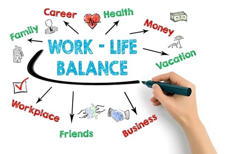
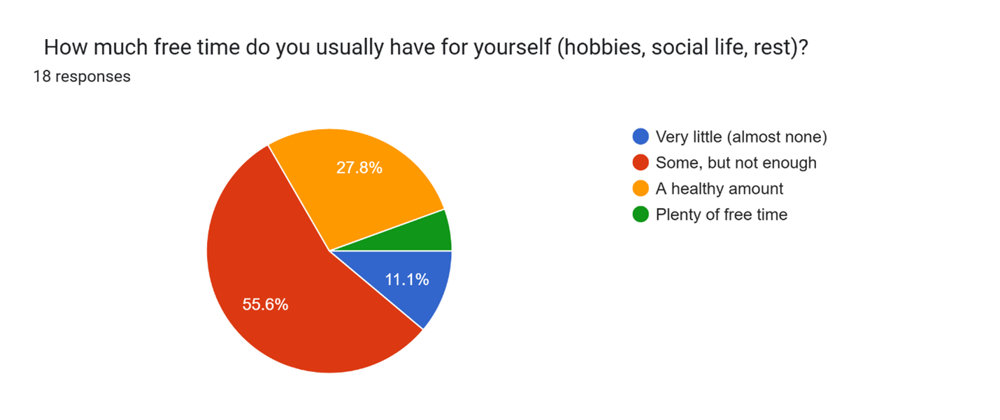
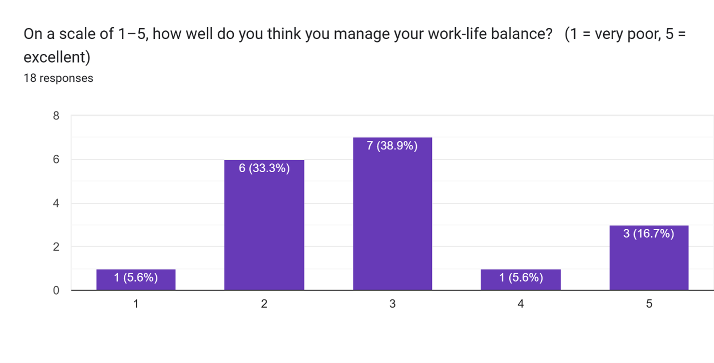

Young Adults Struggle to Strike Work-Life Balance
KUALA LUMPUR: For many young Malaysians, the pursuit of work-life balance remains an uphill battle, with long hours, financial strain, and constant digital connectivity coming out as the most significant obstacles.
In recent years, the concept of work-life balance, which used to be seen as a privilege, has become a hot topic. Globally, the Covid-19 pandemic has blurred the boundaries between work and home, rising living costs and competitive academic demands have only added pressure.
The concept of work-life balance has drawn more attention in recent years. During the Covid-19 pandemic, the line between work and home grew less obvious, and many young adults began to reconsider how much time they should give to school, work, and personal life. Based to survey responses, long hours, financial problems, and academic burdens are among the most common reasons for difficulty maintaining balance.
A recent poll of students, part-timers, freelancers, and full-time workers indicated that, while some reported "a healthy amount" of free time, most people acknowledged to having "some, but not enough" for themselves. Many people described having difficulty to find time for hobbies, social activities, and rest, with some rating their balance as a two on a five-point scale.
One 21-year-old student shared: “Nowadays, people don’t get enough rest because we spend too much time on our phones instead of living our lives. If we focus on everything we do, we can do it faster and have more time for ourselves.”
The observation reveals a common conflict. Technology was intended to reduce burdens, but for many, it has resulted in a "always on" mindset. Both students and employers claim that their thoughts are constantly bombarded with notifications and expectations.
Others pointed to the burden of financial pressure. A young part-time worker, who still rated their balance a “5” despite limited hours, stressed the importance of discipline: “Have a timetable and good arrangement weekly.” For others, however, time management alone is not enough to offset long shifts and financial stress.
Mental health awareness also featured prominently. One student, who described having “very little (almost none)” personal time, said, “Mental health awareness should be cultivated and consolidated among societies and communities.” Their viewpoint is consistent with psychologists' warnings that if stress is not managed, it can lead to burnout, anxiety, and depression.
Young adults are advocating for systemic improvements. Several responders suggested a four-day work week, more flexible scheduling, and fair pay to maintain up with the rising cost of living. Others recommended useful support such as financial aid, learning materials, and advice on how to balance life duties.
Unexpectedly, guilt about taking time off remains common. Many people reported feeling "pressured" when they took time away from their school or work. This mirrors a broader societal attitude in which production is frequently associated with personal value.
Optimism lingers. A freelancer in their twenties, who gave their balance a perfect "5", recommended a simple mantra: "Relax yourself."
The findings show that, while discipline and positive attitudes are important, larger cultural and organisational reforms are required. Work-life balance is no longer a luxury for Malaysia's young people, but rather a requirement for living better, more sustainable lives.